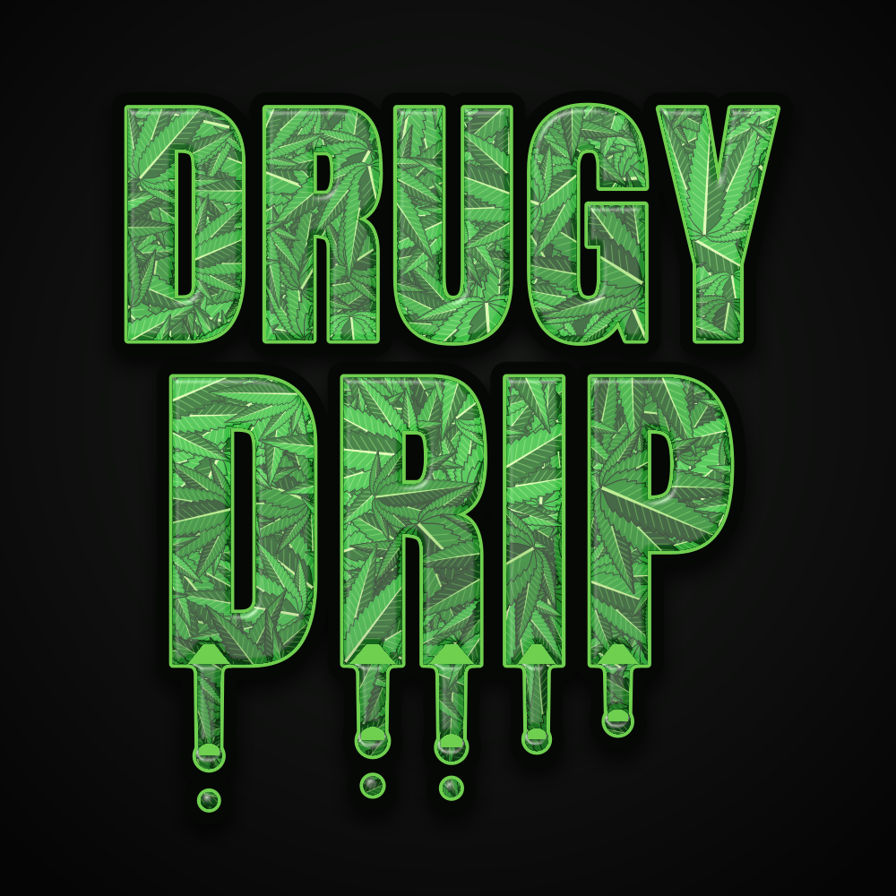
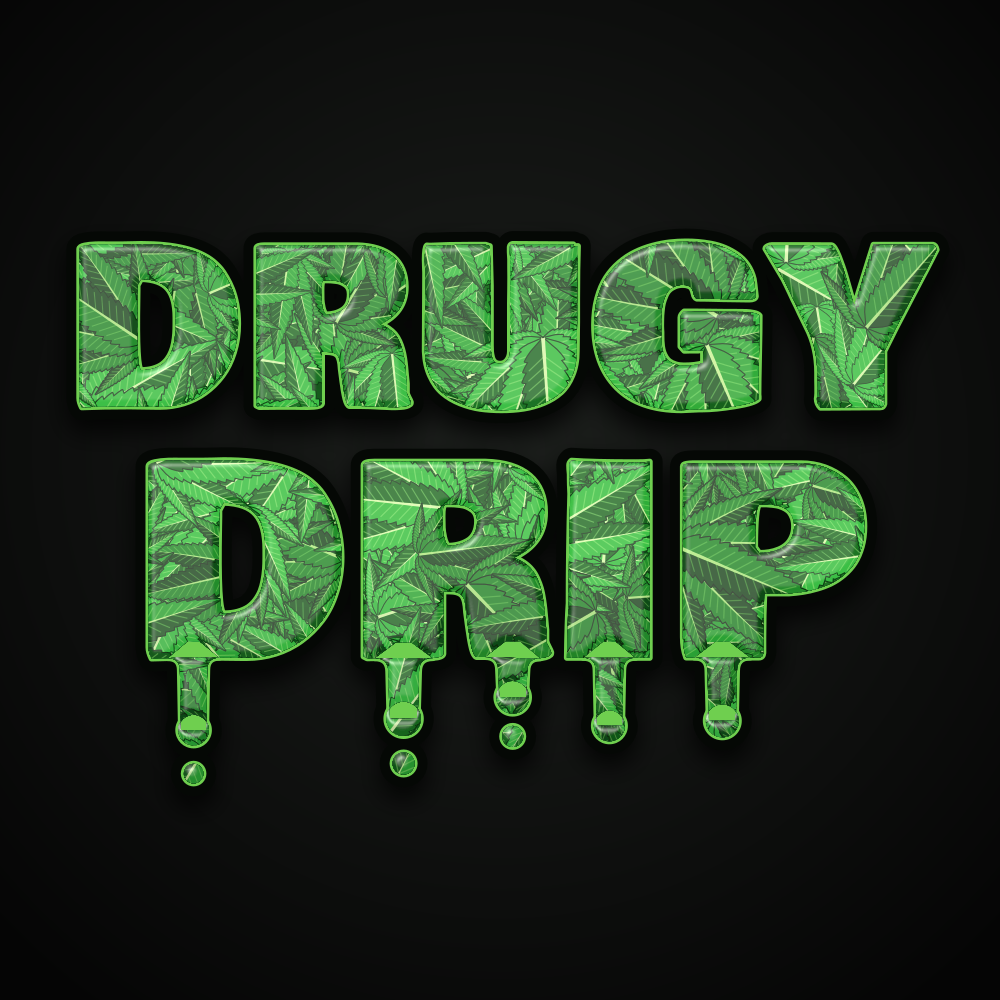
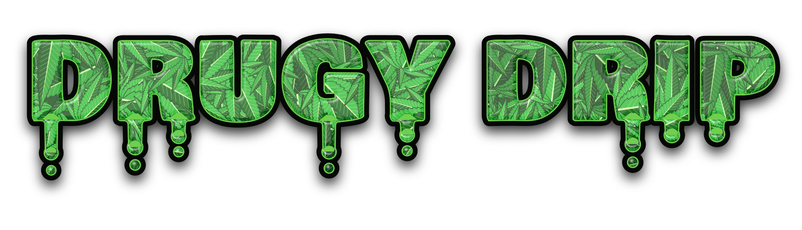
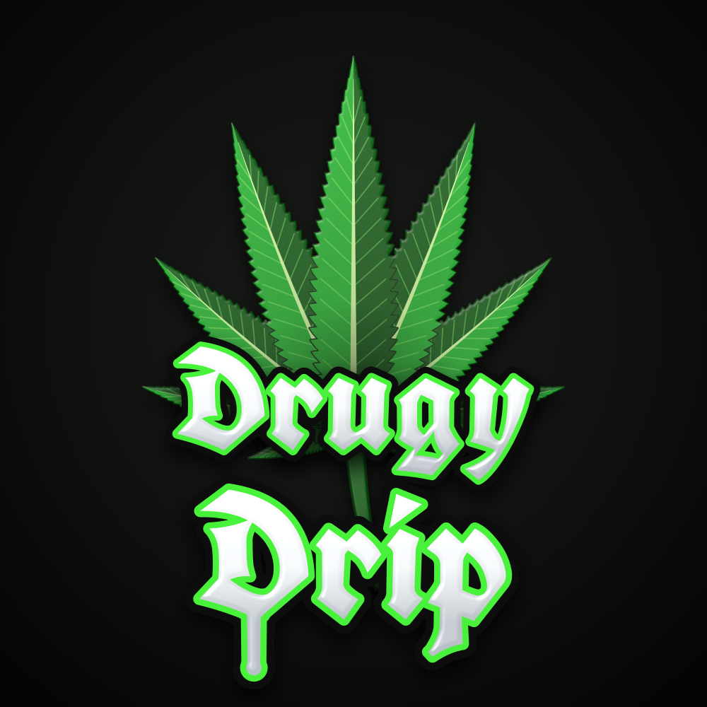
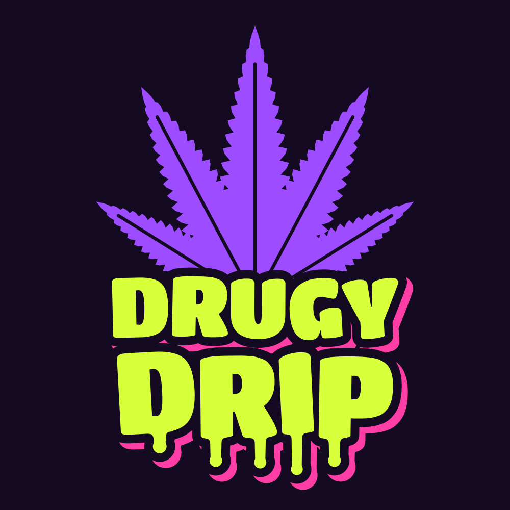
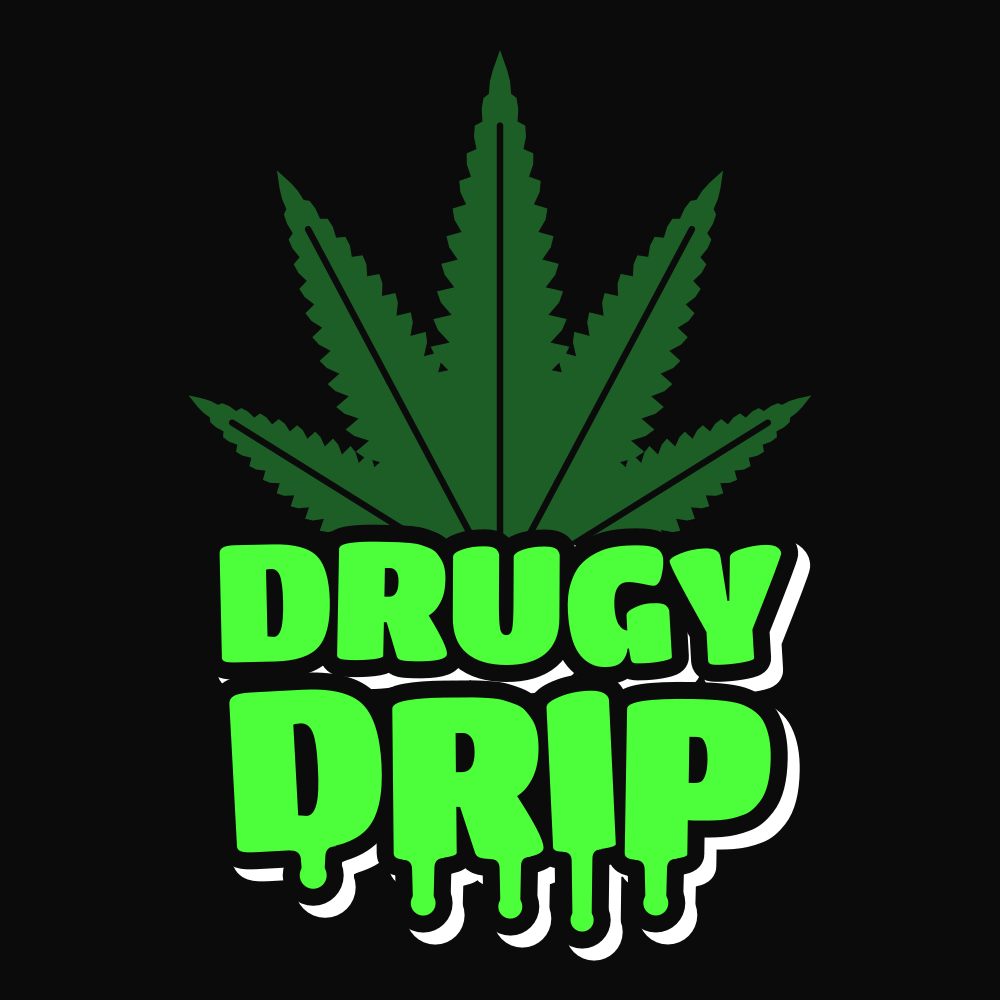
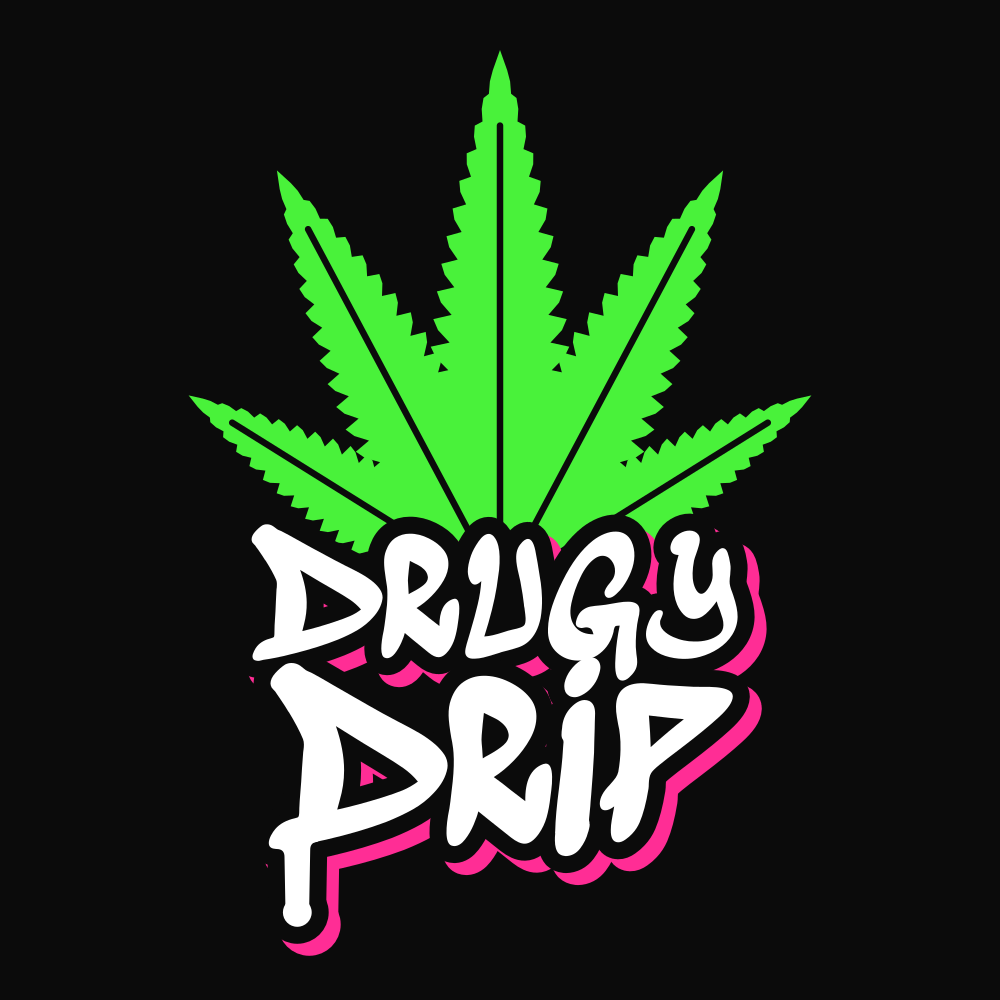
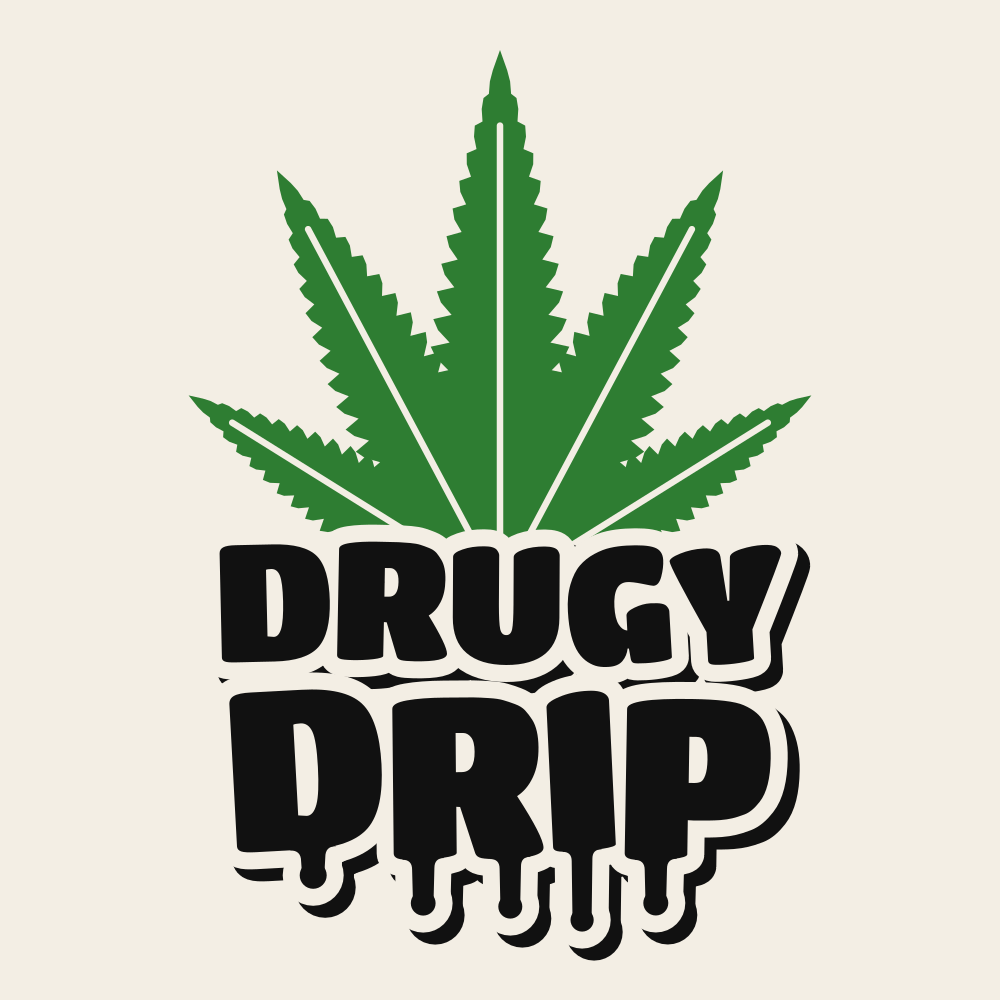
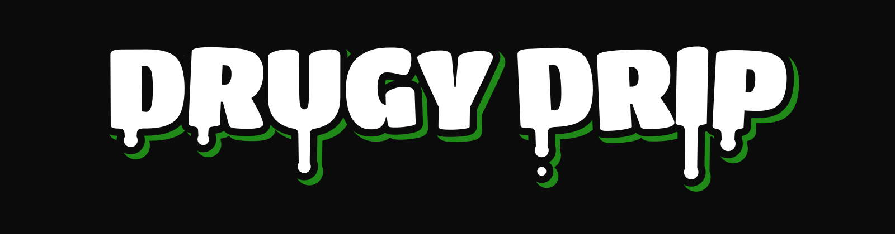

Drugy Drip: logo options
Generated by tools/logo/make_logo.py

L1. Leaf-cut TallLetters cut out of leaves, tall font

L2. Leaf-cut HeavyLetters cut out of leaves, wide font

Leaf-cut wordmarkOne line, transparent background
R1. ChromeRealistic leaf, chrome letters with drips
R2. GoldRealistic leaf, gold letters with drips

R3. GothicRealistic leaf, blackletter streetwear text
1. OG GreenNeon green leaf, white drippy letters

2. Purple HazePurple leaf, lime letters, pink shadow

3. ToxicDark leaf, neon green letters

4. GraffitiSpray-paint letters, pink shadow

5. LightFor white tees and tags
IconFavicon / profile picture

Wordmark (no leaf)For ads, website header, tags